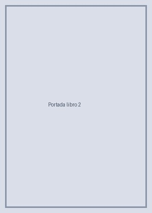

Rimas y leyendas
Gustavo Adolfo Bécquer
11,50 €
Las poesías más queridas del Romanticismo español, sobre el amor y la soledad, junto a leyendas llenas de misterio, castillos y pasiones imposibles.
- Páginas: 320
- Formato: edición de bolsillo
- Envío en 24 horas